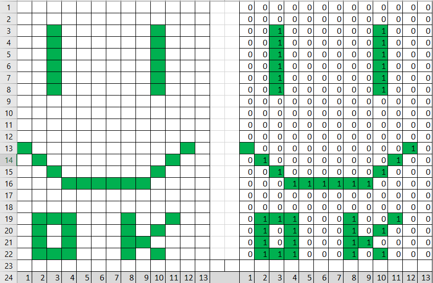

El mensaje de Arecibo es un mensaje codificado en ceros y unos, su creacion
fue para desafiar a otros cientificos de la epoca a descifrarlo.
Pero su nombre viene del poder contactar con la vida inteligente de otros planetas
¿Como se hace?
la forma de poder enviar el mensaje es atravez de ondas, estas ondas son enviadas en forma de 0 y 1
(apagado,encendido) el mensaje decodificado es una representación gráfica y para poder preparalo sera necesario hacer lo siguiente
Debemos de tener el tamaño del mensaje para poder hacer una cuadricula donde el ancho debe ser menor al alto, asegurandonos que dichos numeros sean primos
Debemos de asignar las posiciones de los numero 1 para poder dibujar nuestra representación
Luego de armar nuestro mensaje tenemos que rellenar los espacios no usados con 0
como ultimo paso lo que debemos hacer es juntar los 0 y 1 en una sola linea
Y eso es todo ya esta listo para ser enviado
Forma de armar el mensaje

COPIA EL CODIGO DE AQUI
Ejemplo "Codigo Drake"
El codigo binario que estamos presentando fue la primera vez que se da la idea del mensaje
El codigo anterior se conforma de 551 digitos y el numero 551 se forma a
partir de dos numeros primos 19 x 29
dichos numeros formaran el ancho y alto de la simbolizacion de la derecha de esta
manera lo unico que nos queda es llenar los espacios del rectangulo con los todos
los digitos del codigo binario
Como una opcion podemos resaltar los espacios que contengan un uno o borrar los que contengan ceros
COPIA EL CODIGO DE AQUI
Codigo Python
El codigo que veras a continución sientete libre de copiar y pegar en un cualquier idle de Python
# Esta parte son de las funciones para leer y mostrar
def mostrarMatriz(a,n,m):
#esto solo es una forma para mostrar el mensaje
for i in range(0,n):
print(' '.join(map(str,a[i])))#esta parte elimina los [ , ]
def leermatriz(a,n,m,mensajeAUX):
#rellenamos el rectangulo con el mensaje que esta sin ceros
c=0
for i in range(n):#filas
b=[0]*m
for j in range(m):#columnas
b[j]=mensajeAUX[c]
c+=1
a[i]=b
#!--------------------------------------
# Aqui comienza el codigo para poder armar el mensaje
mensaje=input()
mensaje=mensaje.replace('0',' ') #eliminamos los ceros del mensaje
mensajeAUX=mensaje
tamañodeMensaje=len(mensaje) #calculamos el tamaño del mensaje
print (tamañodeMensaje)
print ("--------------------")
mensaje=tamañodeMensaje
dimensiones=[]
for i in range(2,mensaje): #aqui sacamos las dimensiones del mensaje
if mensaje%i==0:
dimensiones.append(i)
print(dimensiones)
print("---------------------")
#!--------------------------------------
matriz=[0]*dimensiones[1] #preparamos el rectangulo del mensaje
leermatriz(matriz,dimensiones[1],dimensiones[0],mensajeAUX) # aqui la funcion busca llenar los espacios del rectangulo
mostrarMatriz(matriz,dimensiones[1],dimensiones[0])
#!-----------------------------------------------